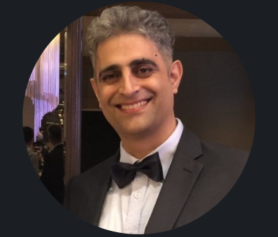
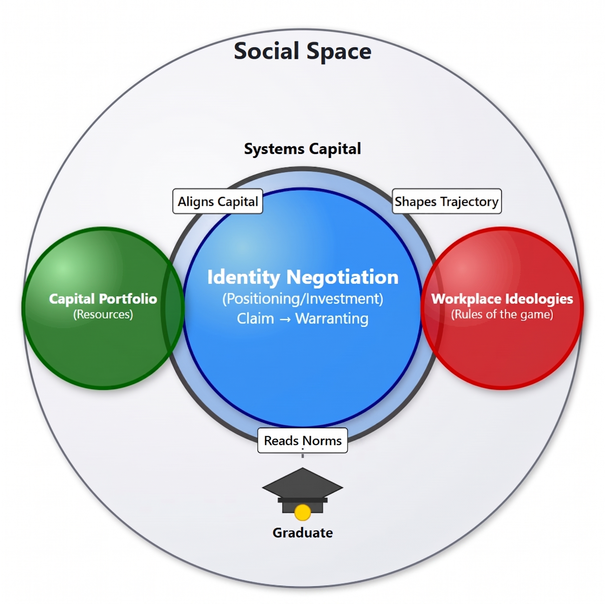

Professional Development · Workshops · Corporate Training
Research-informed professional development programmes that help organizations strengthen leadership, critical thinking, emotional capital, AI capability, communication, professional identity, and workplace effectiveness.
Drawing on internationally published research, I design and facilitate practical workshops that help employees navigate change, think critically, build emotional capital, leverage AI responsibly, communicate effectively, develop professional influence, and thrive in today's complex workplace.

A few things about me

The Systemic Identity Negotiation Model (SINM)
The Theoretical Foundation
Professional identity isn't fixed — it's negotiated. The Systemic Identity Negotiation Model explains how professionals position and invest in an identity claim, and have that claim recognized, or "warranted," by the systems around them.
The skills, credentials, experience, and networks a professional brings into a workplace system.
The unwritten norms, values, and expectations that govern how a given workplace actually operates.
The capacity to read these rules and align personal resources with them — shaping career trajectory.
The ongoing process of claiming a professional identity, and having that claim recognized by others.
A Note for Companies
One of the flagship offerings — helping teams see the whole system, not just their part of it.
One of the most distinctive offerings — teaching people to think alongside AI, not just use it.
Positioned as a signature executive programme for senior leadership cohorts.
Premium Flagship Programme
A 5-day signature programme — the flagship corporate offering, taking a cohort from professional identity through to AI readiness.
For Healthcare Professionals in Singapore
Singapore's healthcare workforce is being asked to do more with less: an ageing population, tight staffing, rising multimorbidity, and a fast-moving shift toward AI-assisted care. The same evidence base above — the SINM, and my research on emotional capital, critical thinking and professional identity — is adapted here for the ward, the clinic, and the hardest conversations in between.
The Theoretical Foundation, Applied to Healthcare
Professional identity isn't fixed on a ward, either — it's negotiated, rotation by rotation. The SINM explains how a nurse, doctor or allied health professional positions and invests in a professional identity claim, and has that claim recognised — "warranted" — by the team, the hierarchy, and the system around them.
Qualifications, clinical hours, certifications, languages spoken, and the trust already built with patients and colleagues.
The unwritten hierarchy, escalation norms, and "how things really get done" on a unit — rarely identical to what's written in the protocol.
The capacity to read a ward's culture and align your clinical resources with it — often the real difference between two equally qualified colleagues' trajectories.
The ongoing process of claiming an identity — "ready for advanced practice," "a clinician the team trusts with ambiguous cases" — and having it recognised.
Singapore's wards are among the most internationally staffed workplaces in the country. Built directly from the SINM's original research context — identity negotiation inside an unfamiliar system.
Premium Healthcare Flagship Programme
A multi-day signature programme for hospitals, clusters and care providers — taking a clinical cohort from identity and communication through to complex decisions and AI-ready practice.
Who This Is For
The Strongest Marketing Message
Contact
A short conversation to understand your team's challenges and goals.
Email to BookBring any of the 13 tracks, or the 5-day flagship, directly to your organization.
Request DetailsA bespoke workshop built around your specific business challenge.
Start a Conversation